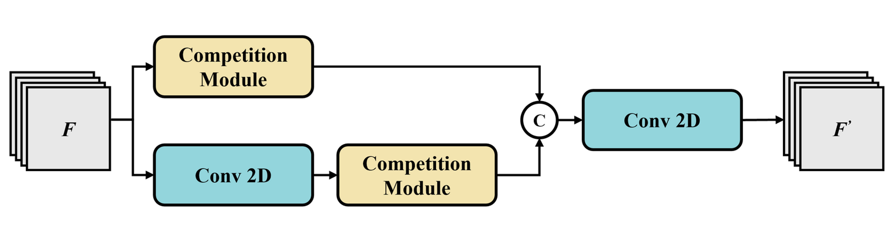

Two paths through the block


One branch compares the incoming features directly. The other first uses a 3 × 3 convolution to capture local vein patterns. The block concatenates both outputs and uses a 1 × 1 convolution to restore the channel count.